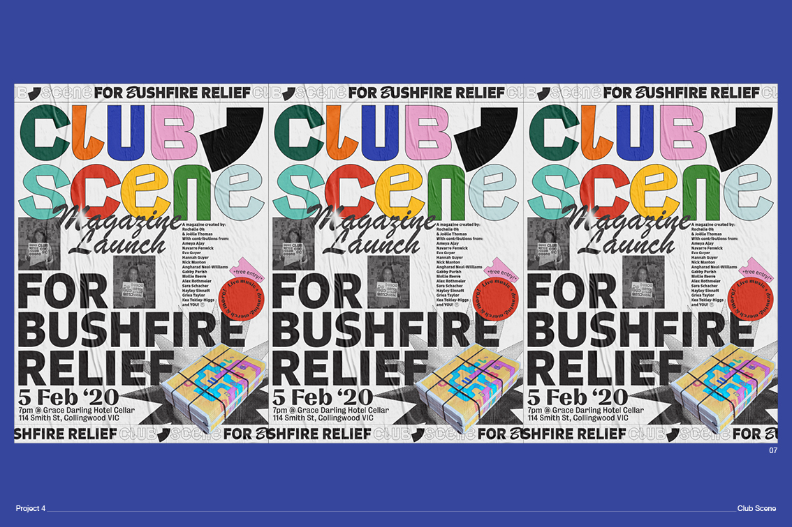

Projects
→Salamatea.
SalamaTea is a new Persian cafe in Sunshine. SalamaTea was founded by Hamed, a refugee who travelled to Australia by boat in dangerous conditions, and wanted to create a safe space with a celebration of Persian food and tea, where he would able to provide jobs to other refugees.
SalamaTea was after a new fresh and energetic identity that celebrated authenticity but was also modernised for the Melbourne setting. Heroing the pomegranate fruit was essential as it is a well known and important flavour in Persian tea.
→Club Scene.
Club Scene is a collective run by Rochelle Oh and myself. It started out as a magazine, but has extended to a podcast, and screen printed t-shirts, and we have aspirations for plenty more. This first issue of the Magazine, is ‘Vessel’. We explored all perceptions of this term and what they might mean through the public’s input and creative contributions from talented local artists, writers and designers. The magazine acts as an archive for the wide range of responses, presented on newspaper material.
This is the typeface and logo I designed for the Identity, as well as a couple of exerts from the issue.

→Little Districts.
This project aims to encourage youths to be more engaged in their local communities / city councils and be conscious of their role in the environment. This is a platform in the form of a website that acts as a youth ‘hub’ for secondary students. It will provide a spectrum of opportunities, ideas, experiences and workshops that are current, and go beyond the boundaries of school.
It acts as an outlet for youths participate and collaborate with projects, events and ideas and meet others with similar interests within their local areas. It should be regarded to youths as a safe and welcoming space for participation and collaboration.
→Docket Typeface.
This project evolved from challenging the boundaries of digitally printed typography, but also embracing the restrictions it has maintained through receipts and ephemera such as movie tickets, theatre tickets, and transportation passes. These items are intended for temporary use, yet some gain value through collecting and treasuring, while others play into the throwaway culture. Through scanning, enlarging and analysing a range of these printed items came the nature of fast printing; the common glitches such as pixelated curves, misprinted shapes, dotted textures and blurred lines. This became the inspiration for the Docket typeface.


→Urban Heat Islands.
Informational poster about Urban Heat Islands (UHI). This is an A1 Poster / info graph that explains what urban heat islands are, and what solutions are available. This poster aims to visually describe why high density suburbs are affected and the affects UHIs have on a city like melbourne.

About
I’m Joëlle, I’m a graphic designer and thrive on all things typography, branding, and publication design. My work is bold and clean with a quirky playful flair. I love experimenting and pushing mediums and finding inspiration through unexpected methods.